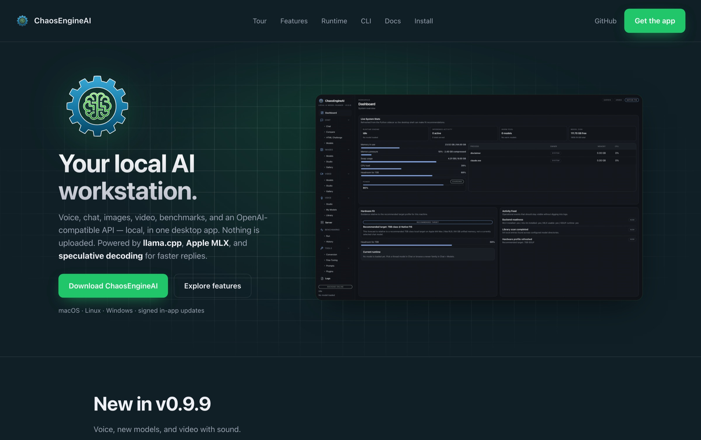
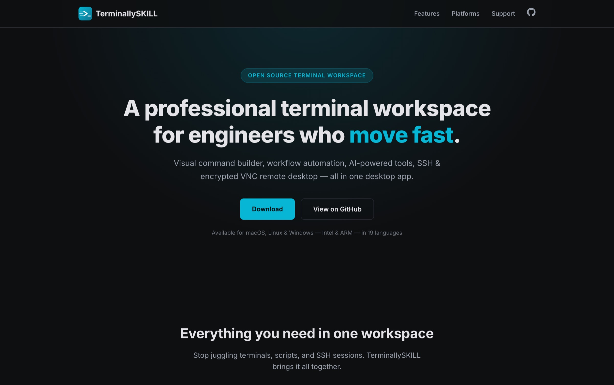
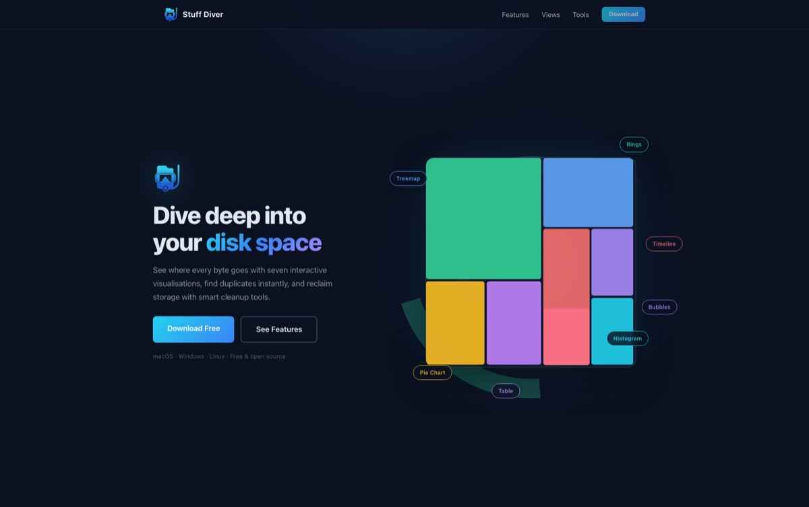
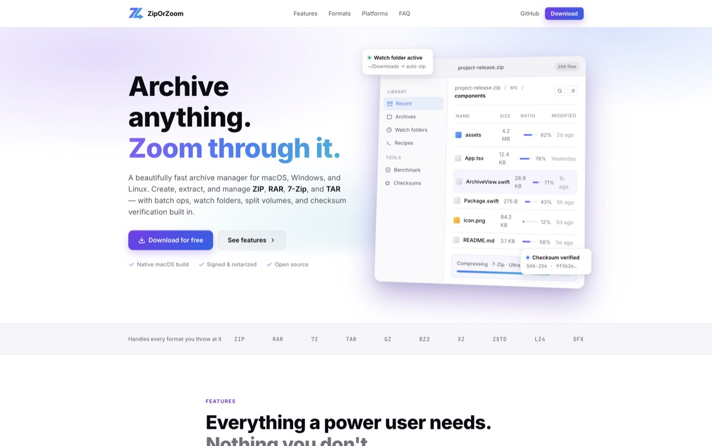

A
AI product builds
From idea to something your users can install or open.
- Prototypes and first releases
- Desktop, web and mobile apps
- Local and cloud model integration
A one-person software company. Twenty years in business systems and analysis, now designing, building and shipping AI-assisted products from first requirement to signed installer. The work below is live and open source.
Each product was scoped, designed, built, tested and released here. They are the best evidence of how I work.




A small number of contract and consulting engagements. One person who writes the requirements and the code, so nothing is lost in the handover.
From idea to something your users can install or open.
AI put to work inside the processes you already run.
Find where AI pays for itself before you spend on it.
Most of my career was spent working out what organisations need and getting it delivered. Now I deliver it myself.
If I were starting a company, I would definitely hire Dan.Director of Accounting, global bank
Send a short email with what you need and when, and we can book a call from there.
info@leveluplogic.co.uk